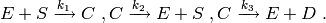
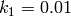
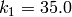
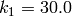

michaelis_menten : an enzymatic reaction¶
Overview¶
The cmepy.models.michaelis_menten module defines a model for the following simple enzymatic reaction system:

The rate coefficients are defined to be
,

and
,
while the default initial counts are 50 copies of the species  and
10 copies of the species
and
10 copies of the species  , with all other initial species counts set to
zero.
, with all other initial species counts set to
zero.
This model can be used in CmePy as follows:
from cmepy.models import michaelis_menten
model = michaelis_menten.create_model_michaelis_menten()
This is roughly the same model used in the enzyme kinetics example. See Example: enzyme kinetics for a detailed example explaining how this similar model can be defined and solved.
Source¶
"""
Model for Michaelis-Menten type enzymatic reaction systems
"""
from cmepy import model
from cmepy.util import non_neg
def create_model_michaelis_menten(s_0 = 50, e_0 = 10):
"""
Creates a model for a simple michaelis-menten enzymatic reaction system:
E+S <-> C -> E + D
The reaction propensities are
E+S -> C : 0.01
C -> E+S : 35.0
C -> E+D : 30.0
while the initial counts are s_0 copies of S, e_0 copies of E,
and zero copies of both C and D.
"""
# first, define functions mapping states to species copy counts
species_c = (
lambda *x : x[0],
lambda *x : non_neg(e_0 - x[1]),
lambda *x : x[1],
lambda *x : non_neg(s_0 - x[0] - x[1]),
)
# second, define reaction propensities via species counts
props = (
lambda *x : 0.01*species_c[0](*x)*species_c[1](*x),
lambda *x : 35.0*species_c[2](*x),
lambda *x : 30.0*species_c[2](*x),
)
# construct the model
return model.create(
name = 'simple Michaelis-Menten system',
species = ('S', 'E', 'C', 'D', ),
species_counts = species_c,
reactions = ('E+S->C', 'C->E+S', 'C->E+D', ),
propensities = props,
transitions = ((-1, 1), (1, -1), (0, -1)),
shape = (s_0 + 1, max(s_0, e_0) + 1),
initial_state = (s_0, 0)
)